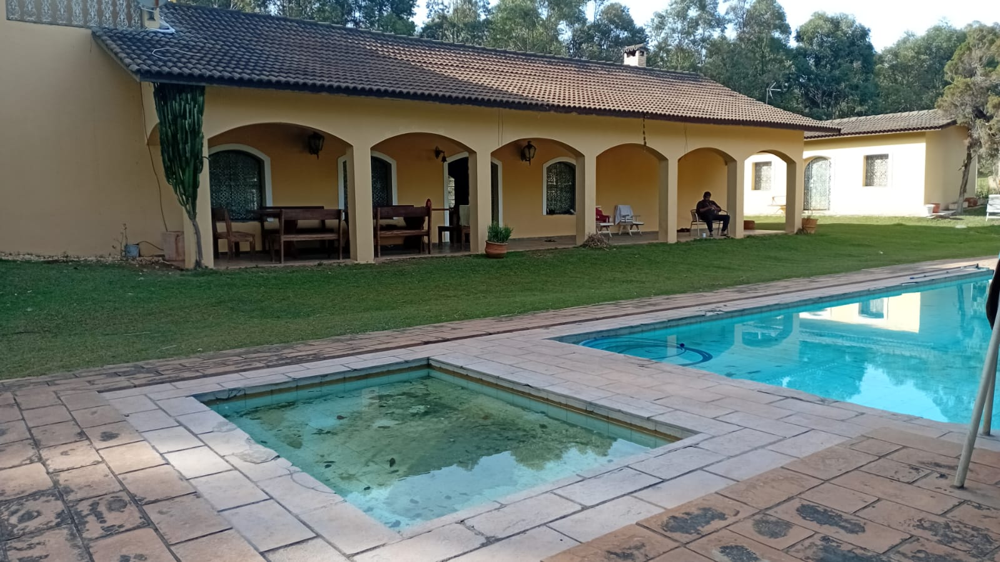
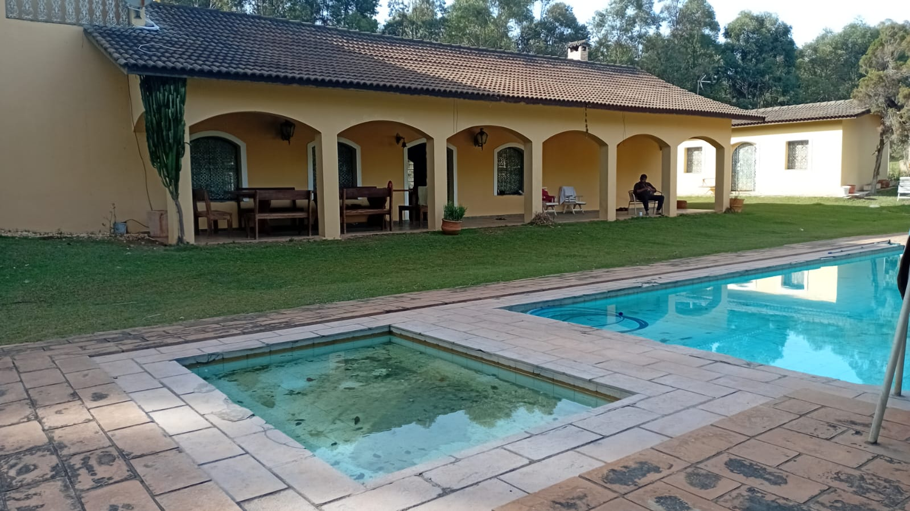

SOBRE C.A.F
No Centro Terapêutico C.A.F, acreditamos que toda pessoa merece uma nova chance — um recomeço guiado pelo
amor, pela escuta e pelo cuidado verdadeiro.
Somos muito mais do que um espaço de tratamento: somos um lar temporário para aqueles que estão em busca de
resgatar sua essência, recuperar sua dignidade e reconstruir sua história.
Especializados no tratamento da dependência química, do alcoolismo e em saúde mental, oferecemos um acompanhamento integral por meio de uma equipe multidisciplinar composta por profissionais
experientes e comprometidos com cada etapa do processo de recuperação. Aqui, cada ser humano é visto em sua
totalidade — com suas dores, suas batalhas, mas também com seu imenso potencial de superação.
Nosso ambiente foi pensado para
acolher, confortar e inspirar. Em meio à natureza e ao
silêncio que cura, proporcionamos um espaço seguro, onde a escuta ativa, o respeito e o afeto são pilares
fundamentais. Trabalhamos com responsabilidade, empatia e compromisso, acreditando profundamente na capacidade
de cada um se reinventar, por mais longa que tenha sido a escuridão.
No C.A.F, a jornada é compartilhada. Caminhamos ao lado de
nossos acolhidos e de suas famílias, construindo, juntos, pontes para uma vida mais leve, consciente e livre.
Porque recomeçar é possível. E aqui, começa com amor.


 



 Andrews
Andrews